Discord
Подайте заявку в вайтлист и дождитесь одобрения. В Discord — новости, общение и помощь со входом.
Открыть Discord ↗01Скачайте лаунчер
Используем ElyPrismLauncher. На официальном сайте он теперь называется PineconeMC — это тот же проект.
- Откройте страницу скачивания и выберите свою операционную систему.
- Для обычного компьютера на Windows с процессором Intel или AMD выберите Windows → x64 → Setup. Для ARM-компьютера нужна ARM64-версия.
- Запустите установщик, завершите установку и откройте лаунчер. Выберите русский язык. Если мастер предлагает настройку Java, используйте автоматический подбор.
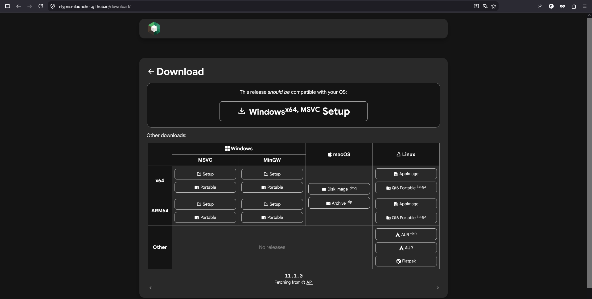
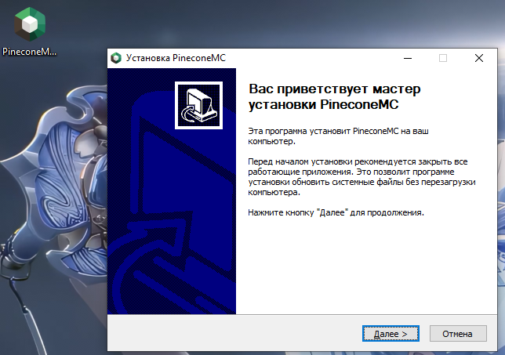
02Выберите аккаунт и ник
Рекомендуем Add Ely.by: с аккаунтом можно загрузить свой скин или выбрать готовый.
- Откройте «Параметры» → «Учётные записи» и нажмите Add Ely.by.
- Зарегистрируйтесь на Ely.by, если аккаунта ещё нет, и завершите вход через лаунчер.
- Выберите или загрузите скин на Ely.by. В лаунчере выберите добавленный аккаунт для игры.
Если не хочется регистрироваться и устраивает стандартный скин Minecraft, нажмите «Добавить автономную», введите ник и сохраните аккаунт. На скриншоте открыто именно это окно; кнопка Add Ely.by находится справа вверху.
Ник выбранного аккаунта должен совпадать с заявкой в вайтлист. Не меняйте его после одобрения без согласования с администрацией.
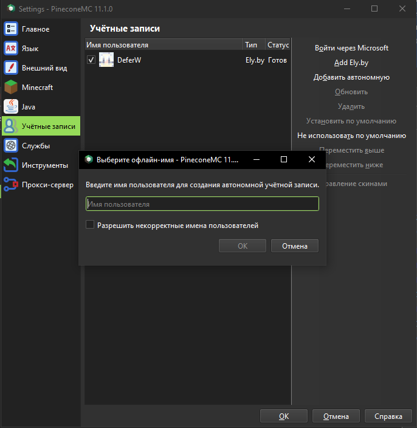
03Установите Minecraft 26.3
Проще установить готовую сборку Fabulously Optimized. В ней уже есть Fabric и моды для оптимизации.
- Нажмите «Добавить экземпляр» и выберите Modrinth слева.
- Найдите Fabulously Optimized.
- В поле «Выбранная версия» выберите выпуск именно для 26.3. На скриншоте это 15.0.0-alpha.3 for 26.3. Alpha — предварительная версия; если доступен стабильный выпуск для 26.3, выбирайте его.
- Нажмите «ОК» и дождитесь установки. Запустите экземпляр, чтобы лаунчер скачал файлы игры. После появления главного меню закройте Minecraft перед установкой голосового мода.
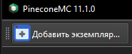
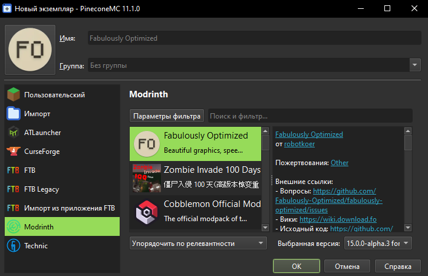
Вариант без готовой сборки
Добавьте обычный экземпляр Minecraft 26.3. Откройте «Изменить» → «Версия» → установку Fabric и выберите совместимый Fabric Loader. Затем установите Simple Voice Chat по следующему шагу.
04Добавьте Simple Voice Chat
- Откройте Simple Voice Chat на Modrinth.
- Нажмите Download. В окне загрузки, в разделе Download manually, выберите Minecraft 26.3 и Fabric. Нажмите нижнюю кнопку Download, чтобы скачать
.jar. Кнопка «Install with Modrinth App» не нужна. Несмотря на слово «plugin» в адресе страницы, для игры нужен мод Fabric, а не серверный плагин Paper или Bukkit. - В лаунчере выберите установленную сборку → «Изменить» → «Моды». Просто перетащите скачанный
.jarв окно со списком модов (drag and drop). Распаковывать файл не нужно. Также можно воспользоваться кнопкой «Добавить файл». - Убедитесь, что Simple Voice Chat появился в списке и включён галочкой. Не устанавливайте несколько его версий одновременно.
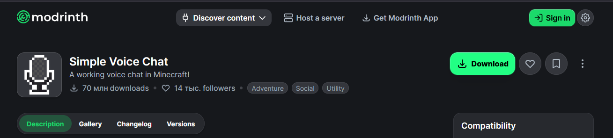
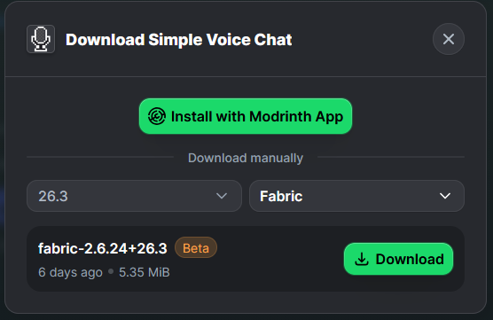
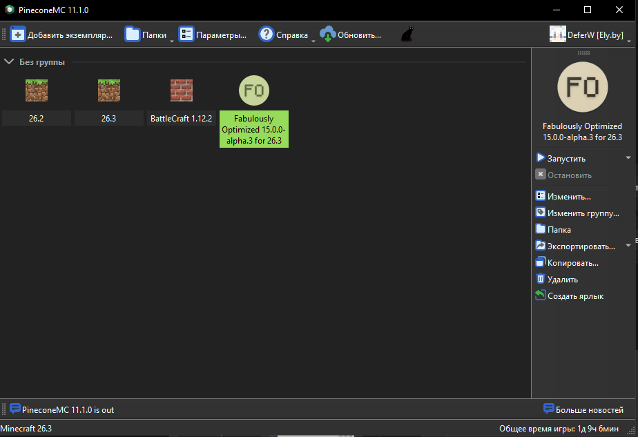
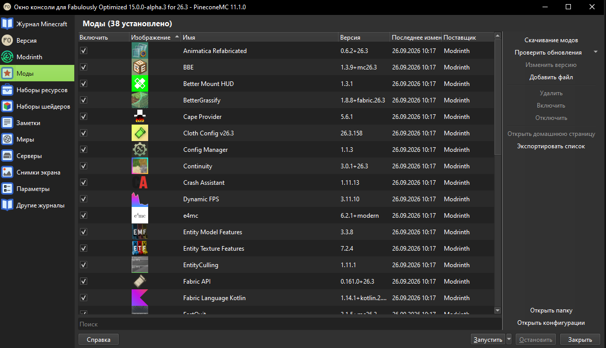
Также можно установить мод через «Моды» → «Скачивание модов» → Modrinth, проверив версию игры и загрузчик.
05Зайдите на сервер
Фон меню и язык игры у вас могут отличаться от скриншотов. Это нормально: ниже указаны русские и английские названия нужных кнопок.
- Прочитайте правила и дождитесь одобрения заявки в Discord.
- Запустите установленный экземпляр Minecraft с выбранным аккаунтом.
- Откройте «Сетевая игра» / Multiplayer → «Добавить сервер» / Add Server.
- В поле «Название сервера» / Server Name можно написать что угодно — это только подпись в вашем списке. В поле адреса вставьте whtsky.mineserv.ru — без
https://. - Нажмите «Готово», выберите сервер и подключитесь.
Если появилась ошибка вайтлиста, проверьте выбранный ник и статус заявки. Если версия не совпадает — убедитесь, что запущена именно 26.3.
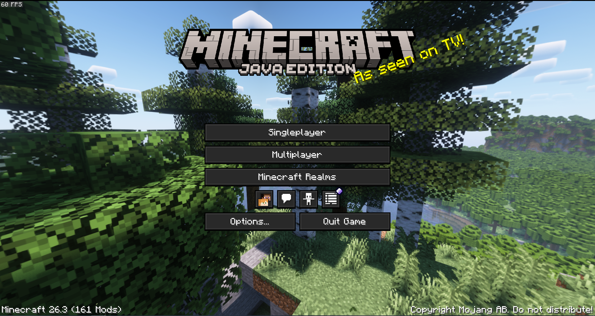
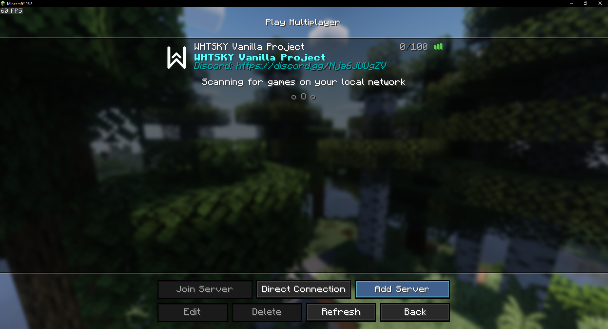
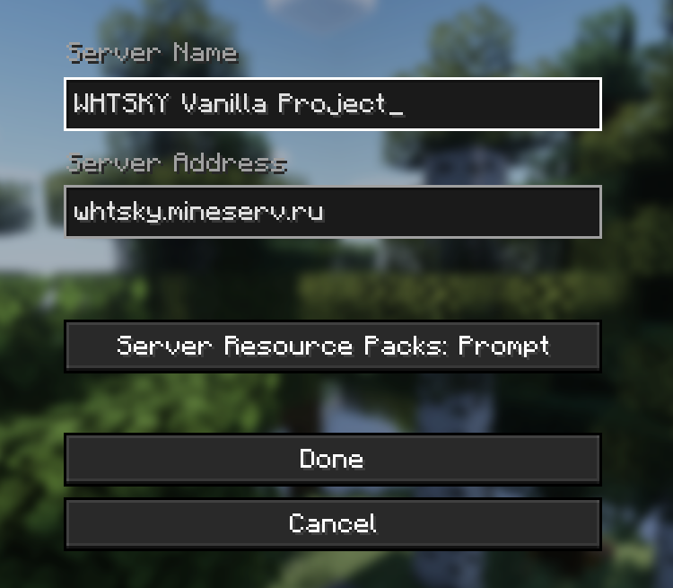
06Настройте микрофон
- После входа нажмите V — стандартную клавишу меню Simple Voice Chat.
- Пройдите мастер настройки: выберите микрофон и наушники, затем режим передачи голоса. Для начала удобно использовать разговор по нажатию кнопки.
- Назначьте кнопку разговора и проверьте микрофон в настройках мода. Разрешите доступ к микрофону в операционной системе, если она его запрашивает.
Если меню не открывается, проверьте назначение клавиш в Minecraft. Если мод сообщает, что голосовой чат не подключён, напишите в Discord: для работы нужна настройка и на стороне сервера.